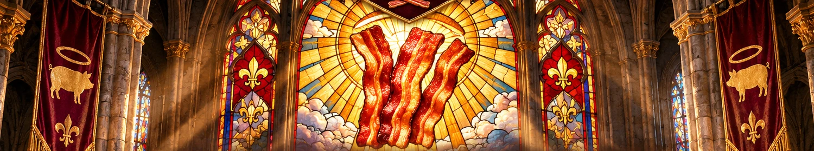
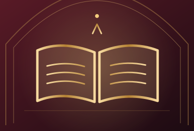
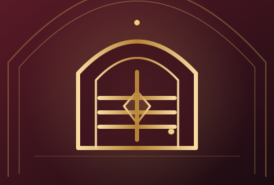

In Bacon We Trust.
One Faith. Many Cuts. Infinite Crispy Possibilities.
Welcome, weary traveller, to the world's most magnificently unnecessary place of worship. Here, the skillet is sacred, the crunch is divine, and a terrible pun is considered a form of prayer.
“And on the eighth day, there was bacon. And it was very good.”
BOOK OF BREAKFAST · 1:08Choose thy pilgrimage.
Every great institution needs departments. Ours are staffed entirely by imaginary people wearing aprons.

The Ten Commandments
The sacred laws of bacon, written in stone and occasionally splattered with grease.
Read the laws ↗
The Book of Groanings
The jokes are dreadful. The faith remains strong.
Hear the groans ↗
Sacred Recipes
Culinary miracles for the very hungry.
Enter the kitchen ↗
The Confessional
For those who have committed crimes against breakfast.
Seek forgiveness ↗
Join the Faith
Membership is free. The emotional commitment is enormous.
Take the pledge ↗Prepare to repent.
Why did the bacon start going to church? REVEAL THE AWFUL TRUTH ＋

All are welcome
at the table.
Even those who insist they prefer their bacon soft. We are working on forgiveness.
Join the Congregation